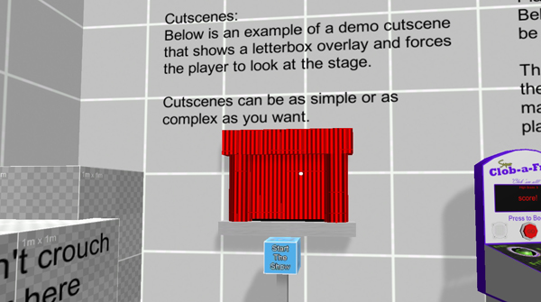
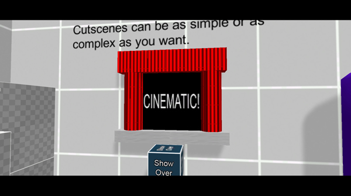
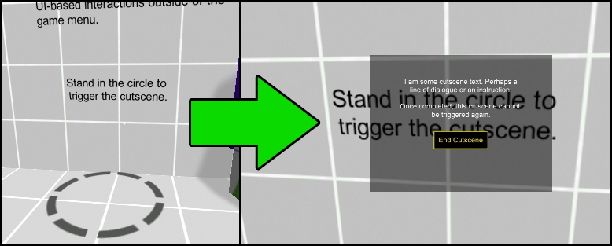

Cutscenes can be used through calls to the FPEInteractionManagerScript's BeginCutscene() and EndCutscene() functions.
Note: The player can only enter a SUSPENDED state when requested by an outside script using the BeginCutscene() function. This outside script is responsible for releasing the suspended state by calling the EndCutscene() function. Failure to do this will result in play being stuck in a suspended state!In demoScene.unity, there is a demo cutscene interaction in the form of a small stage with a button. When the button is pressed, a call to BeginCutscene() is made.
When that demo cutscene plays, it shows some letterbox bars and forces the player camera to look at the stage, as shown below. Once the cutscene is over, the player is released by a call to EndCutscene().
In demoScene.unity, there is also a demo cutscene that uses a basic UI with some text and a button. When the cutscene starts, the dialog appears. And when the player clicks the button, the cutscene ends.
A cutscene can also be really basic. If you simply need to make the player stand still for a second while another scripted event happens, you can do that. For example, when swinging open a door, you may want to make sure the player cannot move while the door is swinging. That is just a tiny cutscene.
There are two helper classes that also come with the demo that can be reused for other cutscenes. Those are:
| DemoForcePlayerLookAt.cs | This script forces the player camera to look at a transform through the forceLookAt() function. It requires a DemoLetterBox. |
| DemoLetterbox.cs | This script is placed on an object with a canvas and letterbox bars. The bars are animated to move in and out through calls to moveInLetterBox() and moveOutLetterBox(). |
When these elements are used in combination, you can create some really interesting results!